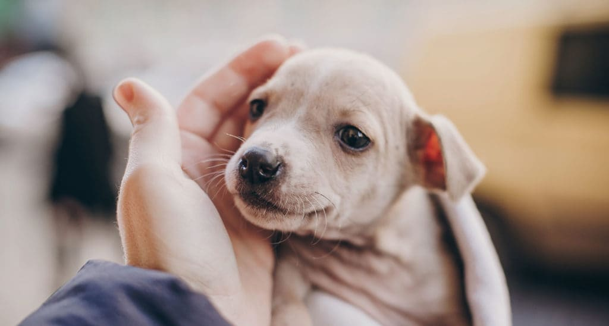

ABOUT US

Mission and Vision
We are a nonprofit organisation focused on animal welfare that is led by young people and committed to reinventing the industry. Our attention is mostly drawn to the stray animals that local residents rescue. To accomplish this, we reward volunteers who help rescue these animals with incentives like certificates. The ultimate objective of our network expansion and exploration is to ensure that no stray animal goes unrescued.
Khoj was born from our shared love for animals. We intend to establish a passion for animal care and welfare in everyone's heart, just as our amiable neighbourhood dog did in ours, with the help of a group of similarly zealous volunteers.